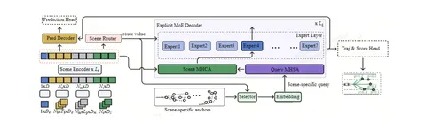

Сегодня начнëм разбирать статью от исследователей компании BYD. Авторы собрали в одну конструкцию три идеи:
Это позволило получить SOTA-результат на стандартном исследовательском бенчмарке nuPlan среди learning-based-методов без постобработки.
Роутеры и эксперты
В языковых моделях MoE применяют, прежде всего, ради вычислительной эффективности, а здесь — ставка на явную специализацию. Ключевая идея: в отличие от текстов, манёвры легко разбить правилами на семантически чёткие классы. Авторы выбрали семь таких классов: прямо, налево и направо на перекрёстке, прямо вне перекрёстка, разворот, кольцо и «другие».
Модель устроена привычно: энкодер сжимает сцену (машины вокруг, карту, состояние эго) в признаки, а декодер по ним генерирует варианты траектории. Эксперты встроены в слои декодера. Каждому обучающему примеру заранее присваивают тип, а роутер учится предсказывать его по эмбеддингу сцены.
Явная разметка позволяет напрямую контролировать, сколько данных получит каждый эксперт. Балансирующие лоссы, как в LLM, не нужны (они, по мнению авторов, могут портить обучение). Но проблему редких сценариев полностью это не решает: уникальных примеров разворотов, например, в датасете мало, и на них модель справляется хуже всего.
Якоря
Для каждого сценария конечные точки водительских траекторий на горизонте 8 секунд кластеризуют с помощью k-means в 24 якоря.
По сценарию, который определил роутер, берётся нужный комплект якорей. Их координаты кодируются и добавляются к обучаемым запросам декодера, и каждый запрос генерирует свою траекторию-кандидата. Заканчиваться строго в якоре она не обязана, якорь — лишь подсказка. Затем модель оценивает кандидатов и выбирает лучшего.
В следующем посте разберём, как устроено взаимодействие между агентами, и подведём итоги.
Разбор подготовил
404 driver not found
